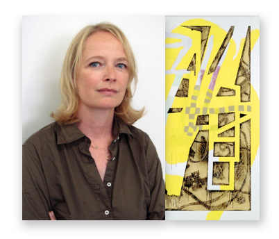
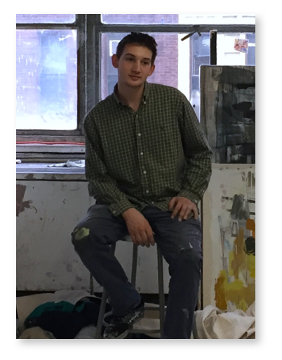
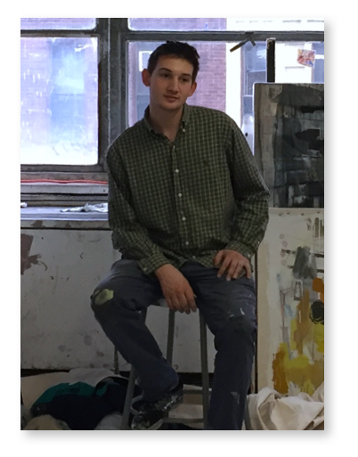

THE ARTIST I am a Boston based painter studying at Massachusetts College of Art and Design. I experienced an emptiness painting from observation, dedicating all of my time outside of school to dicover another realm of painting.
I maximized my experimentation when I gained a studio
in 2015. Using 50 yards of unstrenched raw cnavas to explored a unconventional style of controled chaos that corresponds within all my paintings.
ARTIST STATEMENT Rejecting any conventional classification regarding my style, my work draws the viewers through an unconventional and multilayered experience. The central theme of my work is \the exploration of the relationships that form between collage, painting and drawing. I use a variety of different gestures, different types of mark-making, slight color shifts, and perspective to add a spatial dynamic.
There is something to be said for the immediate, visceral response to a seeming simple yet well-formulated painting. I hope to exciting the observers to motivate their imagination to create personal associations with my paintings.

INSPIRATION Artist are my main source of inspiration. The words and works of other artist, whether it is a class mate or established artist, is more influential than anything else.
I draw great insipartion from Charline von Heyl. She is a German artist best known for her abstract painting. She also works with drawing, printmaking, and collage.
 
